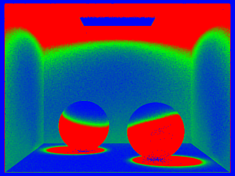

CS184/284A Spring 2025 Homework 3 Write-Up
Overview
This assignment was all about building a functional ray tracer from scratch. I implemented everything from basic ray generation to advanced global illumination and adaptive sampling. The coolest part was watching simple geometric tests turn into photorealistic images. Along the way, I learned how much work goes into making rendering efficient - without optimizations like BVH acceleration, some scenes would take hours instead of seconds to render.
In this homework, I implemented a ray tracer capable of rendering realistic images using techniques such as ray generation, scene intersection, bounding volume hierarchy, direct illumination, global illumination, and adaptive sampling. This project helped me understand the fundamentals of physically-based rendering and the importance of optimization techniques in computer graphics.
Part 1: Ray Generation and Scene Intersection
In this part, I implemented the ray generation and primitive intersection components of the rendering pipeline.
Ray Generation
The function Camera::generate_ray(...) was implemented to generate rays in world space from normalized image coordinates \((x, y)\). The process involves:
- Transforming normalized image coordinates to camera space.
- Generating a ray in camera space that starts at the camera position and passes through the virtual sensor.
- Transforming the ray into world space using the camera-to-world rotation matrix
c2w.
Key implementation details include ensuring the ray direction is normalized and initializing the ray's min_t and max_t values using the near and far clipping planes.
Primitive Intersection
For primitive intersection, I implemented the following algorithms:
- Triangle Intersection: Solving linear equations with (r.d), (p2 - p1), (p3 - p1), and (-t, u, v), (r.o - p1), we can easily figure out u, v, and t.
-
Acceleration: To accelerate the algorithm, I optimized determinant calculations step by step instead of using the
.inv()function, allowing the function to return without fully calculating the matrix inverse. This speeds up the code by 2x.
Results
Below are images generated using the implemented ray generation and intersection algorithms:
|
|
|
These images demonstrate the correctness of ray generation and intersection algorithms. The RGB values represent the direction of surface normals.
Part 2: Bounding Volume Hierarchy
In this part, I implemented a Bounding Volume Hierarchy (BVH) to accelerate ray intersection tests. The BVH significantly reduces rendering time for complex scenes by organizing primitives into a hierarchical structure.
BVH Construction
The BVH is constructed recursively using the following steps:
- Compute the bounding box of a list of primitives and initialize a new
BVHNodewith a bounding box. - If the number of primitives is less than or equal to
max_leaf_size, create a leaf node and update itsstartandenditerators. - Otherwise, pick the longest axis of the bbox and cut it into half along that axis.
-
std::nth_element(start, mdpt, end, [&](Primitive* a, Primitive* b) { return a->get_bbox().centroid()[maxax] < b->get_bbox().centroid()[maxax]; });ensured that all elements before mdpt is less than mdpt and after mdpt is greater than mdpt
To avoid infinite recursion, I implemented logic to handle cases where all primitives lie on one side of the split point.
BVH Traversal
For ray intersection, I implemented a recursive traversal algorithm:
- Test the ray against the bounding box of the current node.
- If the node is a leaf, test the ray against all primitives in the node.
- If the node is an interior node, recursively test the ray against its child nodes.
This approach ensures that only relevant primitives are tested, significantly improving performance.
Results
Below are images rendered with BVH acceleration:
|
|
|
Performance Analysis
Rendering times with and without BVH acceleration:
- Without BVH: 40 seconds (cow.dae)
- With BVH: 0.173 seconds (cow.dae)
The BVH reduces ray intersection complexity from \(O(n)\) to \(O(\log(n))\), enabling efficient rendering of scenes with tens of thousands of primitives.
Part 3: Direct Illumination
In this part, I implemented direct illumination techniques to simulate light transport in the scene and render images with realistic shading.
Diffuse BSDF
The DiffuseBSDF::f function was implemented to represent a diffuse material that reflects incoming light equally in all directions on the hemisphere. The albedo of the material is stored in its reflectance parameter, which describes the reflectance for R, G, and B channels simultaneously.
Zero-Bounce Illumination
Zero-bounce illumination refers to light that reaches the camera without bouncing off anything in the scene. I implemented the zero_bounce_radiance function to return the emission of the object intersected by the ray. This was integrated into est_radiance_global_illumination to render scenes with visible light sources.

Direct Lighting with Uniform Hemisphere Sampling
The estimate_direct_lighting_hemisphere function was implemented to estimate direct lighting on a point by sampling uniformly in a hemisphere. This method uses Monte Carlo estimation to approximate the integral of incoming light over the hemisphere.
Key implementation details include:
- Sampling directions uniformly in the hemisphere using
UniformHemisphereSampler3D::get_sample(). - Checking if a ray in the sampled direction intersects a light source.
- Using the reflection equation to calculate outgoing light.
|
|
|
Direct Lighting by Importance Sampling Lights
The estimate_direct_lighting_importance function was implemented to sample directions between the light source and the hit point. This method reduces noise and enables rendering of scenes with point lights.
Key implementation details include:
- Sampling all lights directly using
SceneLight::sample_L. - Casting shadow rays to check for occlusion.
- Using the reflection equation to calculate outgoing light.
|
|
|
Sampling Rate Comparison
Below are images rendered with different numbers of light rays to demonstrate convergence:
|
|
|
|
|
|
Part 4: Global Illumination
Overview
In Part 4, I implemented global illumination algorithms, including indirect lighting and Russian Roulette optimization. Global illumination simulates the complex propagation of light in scenes through multiple bounces, producing realistic rendering effects such as color bleeding, soft shadows, and ambient lighting.
Indirect Lighting Implementation
The indirect lighting implementation is based on recursive path tracing algorithms. The main steps include:
- Sampling BSDF at surface intersection points to determine reflection directions
- Casting new rays along sampled directions
- Recursively computing lighting contributions from these directions
- Using Monte Carlo integration to estimate total lighting contribution
L_indirect = ∫ f(ωi, ωo) * L_i(ωi) * cos(θ) dωi
where f(ωi, ωo) is the BSDF and L_i(ωi) is the incident lighting
Direct vs Indirect vs Global Illumination Comparison
The following comparison shows the differences between direct illumination only, indirect illumination, and global illumination:
|
Shows only direct lighting from light sources, lacks color bleeding and ambient lighting |
Includes multiple light bounces, showing realistic lighting effects |
Non-Accumulated Light at Different Ray Depths
To better understand how light contributions change with each bounce, I analyzed the non-accumulated (individual bounce) lighting at different ray depths. Unlike accumulated bounces which sum all contributions, non-accumulated rendering shows only the light contribution from a specific bounce depth, providing insight into how indirect illumination builds up progressively.
In the non-accumulated mode (isAccumBounces = false), the renderer isolates the contribution from each specific bounce:
• 1st bounce (depth=1): Direct lighting only
• 2nd bounce (depth=2): First indirect bounce only
• 3rd bounce (depth=3): Second indirect bounce only
• 4th bounce (depth=4): Third indirect bounce only
|
Direct lighting contribution only |
First indirect lighting bounce |

Second indirect lighting bounce |
Third indirect lighting bounce |
Fifth indirect lighting bounce |
The analysis reveals several key insights:
- 1st Bounce: Provides the strongest illumination, primarily from direct light sources. Areas directly lit by the light source are brightest.
- 2nd Bounce: Shows color bleeding effects, where light bounces off colored walls (red/green) and illuminates other surfaces with tinted light.
- 3rd Bounce: Contributes to ambient lighting in shadow regions, though with significantly reduced intensity.
- 4th Bounce: Provides minimal but still noticeable contribution to overall scene brightness, filling in the darkest shadow areas.
Russian Roulette Optimization
Russian Roulette is an unbiased path termination technique that reduces computation by randomly terminating light paths. Implementation details:
- Set termination probability (typically 0.3-0.4)
- Ensure at least one indirect lighting calculation
- Maintain unbiased estimation by dividing by continuation probability
Russian Roulette with Different Bounce Depths
|
|
|
|
|
|
|
|
From the comparison above, we can see that as the number of bounces increases, the scene becomes progressively brighter, especially in shadow regions. The visual quality stabilizes after 2-3 bounces.
Sampling Rate Convergence Analysis
The following shows rendering quality at different sampling rates, demonstrating the convergence characteristics of Monte Carlo integration:
|
|
|
|
|
|
|
Part 5: Adaptive Sampling
Overview
Adaptive sampling is an intelligent optimization technique that dynamically adjusts the number of samples per pixel based on pixel variance. It reduces sampling in low-variance regions while increasing sampling in high-variance regions, significantly reducing computation while maintaining image quality.
Adaptive Sampling Algorithm
The core idea of adaptive sampling is confidence interval estimation from statistics:
- After sampling each batch, calculate current mean and variance
- Calculate 95% confidence interval: I = 1.96 * σ / √n
- If I ≤ maxTolerance * μ, stop sampling
- Otherwise continue sampling until maximum sample count is reached
Which means, when the calculation stops, we have 95% confidence that we've just calculated the right integral.
μ = (1/n) * Σxi (sample mean)
σ² = (1/(n-1)) * Σ(xi - μ)² (sample variance)
I = 1.96 * σ / √n (95% confidence interval)
Adaptive Sampling Results

|
|
|
2048 max spp, batch 64, tolerance 0.05 |

Red regions indicate high sampling density, blue indicates low density |
Parameter Analysis
Tolerance Value Comparison
Effect of different tolerance values on sampling efficiency and image quality:
|
Stricter quality requirements, more sampling |
Balanced quality and efficiency |
Faster convergence, may sacrifice quality |
Batch Size Comparison
Effect of different batch sizes on sampling accuracy:
|
More frequent convergence checks |
Balanced check frequency and overhead |
Reduced convergence check overhead |
Performance Comparison
Performance comparison between adaptive sampling and uniform sampling:
|
All pixels use the same sample count |
Lower average sample count with comparable quality |
Extra Credit
Saving storage resource for BVH tree.
The function rearranges the vector, so that all elements before mdpt are less than it, and all elements after mdpt are greater than it judging by according axis. However, the "before" and "after" elements are still out-of-order. But it doesn't matter, we may change their order since we'll have to re-order them according to other axises.
Rendering Statistics:
Resolution: 480×360 | Render Threads: 8
I used AI to help me set up the website framework for the write-up. Additionally, to speed up rendering, I had AI write a Python script that allows me to render the result images in parallel on three instructional machines.